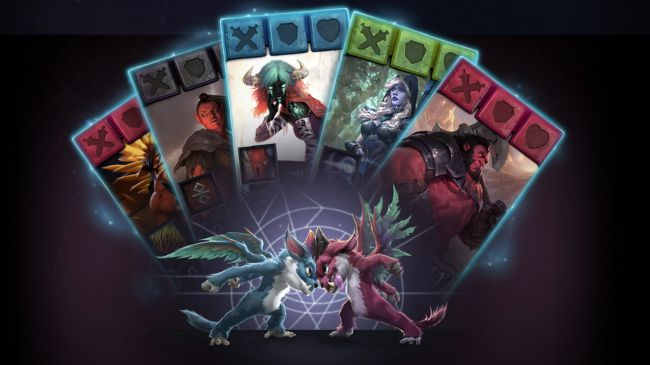
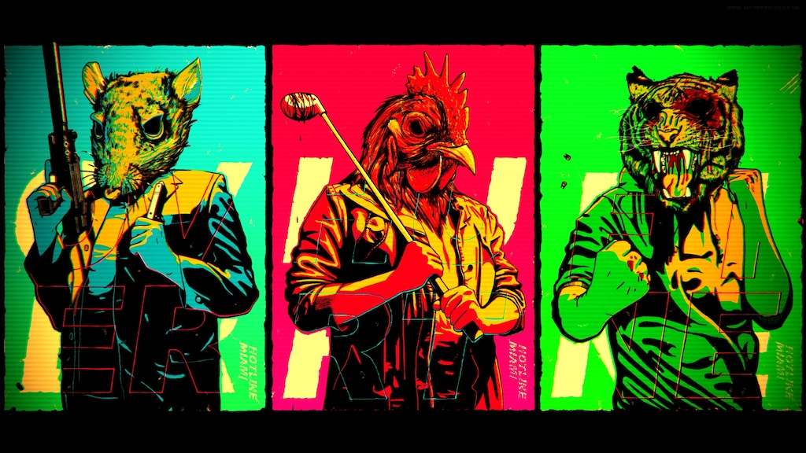

Hottest

At first I was all about Artifact being mainly focused on constructed in tournaments, but after seing the preview tournament i got hooked by it being draft based. A small analogy i thought of is, if you imagine a Dota2 tournament, where every team would play mostly the same 5 heroes vs. the same 5 heroes every game and the only changing variable would be the team who got to play those pre set "Decks", it would kinda be repetitive and tiring, for the player and the spectator (resembling constructed in Artifact). But if you draft heroes for every game, like you actually do in a Dota2 tournament, you create each time an unique "Deck" and every game you play is different. (resembling drafting in Artifact).

Follow Hotline Miami creator Jonatan Söderström has revealed there will be a sequel to the hit indie title. No Caption Provided The developer took to Twitter this week to tell fans that a preliminary Hotline Miami 2 soundtrack was in the works. "Working while listening to the sweet tunes of a preliminary Hotline Miami 2 soundtrack that we've put together during the weekend," Söderström said. The comments were later clarified in a Eurogamer article, in which Söderström revealed the planned DLC for Hotline Miami eventually turned into a fully-fledged game, which the studio plans to reveal as Hotline Miami 2 rather than DLC for the first game. However, Söderström later Tweeted that the team only has some "general plans" for the next game and that their main priority remains "fixing Hotline Miami".
Latest Videos
Sean is off again this week but don’t worry, it’s not another Freeman show as the boys are joined by Gamespot’s Global Head of News, Tamoor Hussain. James feels the pressure reading the news in front of a person who does this for a living, David wants to hear more about Red Dead Redemption 2’s HDR mode and Mat contemplates the future of Half-Life.
The Need for Speed series is 23 years old and in that time the series has reinvented itself more times than I can even count. The most recent reboot of the series happened in 2015 where we saw the spirit of the Underground games from the early 2000s return. While that effort was a good one, it was a relatively short game with a beautiful, but lifeless game world. Payback fixes those issues and gives players a lot more to do in an activity-filled map reminiscent of B Fortune Valley.